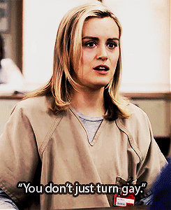
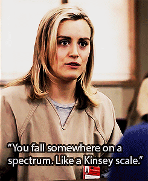
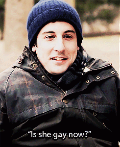

Note: The REAL Piper of Orange is the New Black has clearly stated, “Well, you know, I’m bisexual so, I’m a part of the gay community.” Additionally she has pointed out that she came out at "either 18 or 19”, and “had relationships with many, many women before I met Nora and after I met Nora.”
So viewers should be aware that it was a “creative decision” of the shows writers, producers + NetFlix to minimize and erase the character’s actual + stated bisexuality by never using the “B-Word”, turning her instead into a tired bisexual trope. This should not be viewed as at all realistic.IRL Piper Kerman is a strong, interesting, out bisexual women in a different gender marriage, who participates in her LGBT Community and works hard for Prison Reform.
Holy crap I was reading reviews of her book and everybody was saying she described herself as an “ex-lesbian” too and I didn’t know until now that she actually said “well, you know, I’m bisexual so, I’m a part of the gay community”, oh my fucking god!